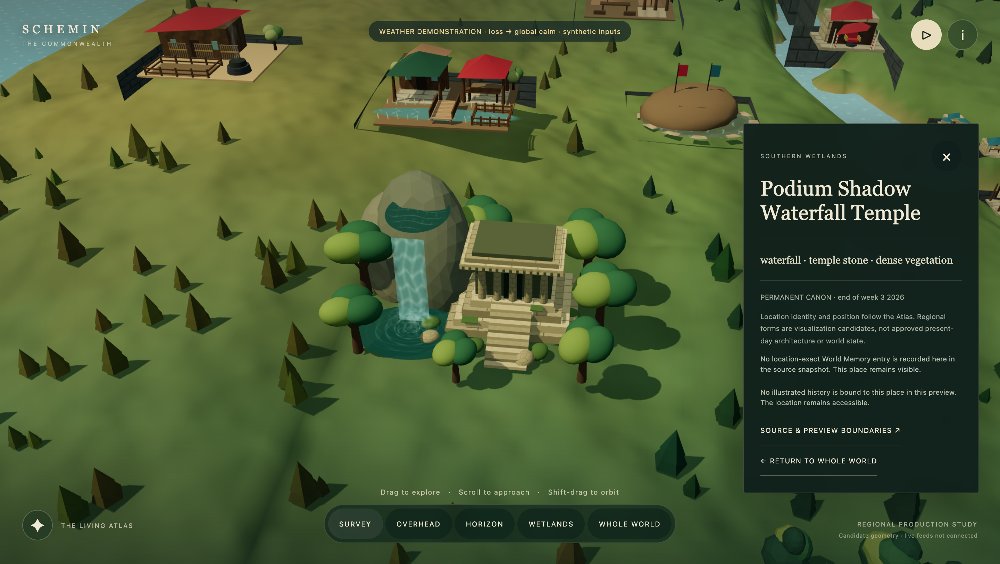

Same paused source location, camera and synthetic Eastern noon. Physical GPU with emulated device density; not physical-phone or isolated spray-pixel proof. Original screenshots are retained at their native pixel dimensions.

Each pair magnifies the same rectangle in the 1440 × 813 logical viewport, using the original captures without changing their pixels. The 2× screenshot contains a capped 1.5× renderer buffer. These are visual aids, not a measured pixel-difference test or artistic acceptance.